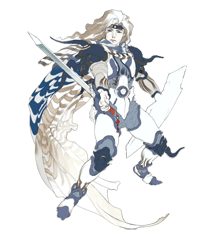

7 |
Proloog en personages |
 |
|
De oorlogen van weleer zijn tot een einde gekomen, de herinnering aan de Lunarians en hun maan is in het verleden vergleden. De rust is teruggekeerd op de blauwe planeet en deze ontwikkelt zich als nooit tevoren. Maar veranderingen steken de kop op en maken aanstalten het land te overspoelen. De kristallen gloeien zachtjes, de donkere schaduwen van de wereld roeren zich wederom. Een nieuwe maan verschijnt aan de hemel...
Tegen de wil van zijn moeder koningin Rosa, sluit Ceodore, prins van het koninkrijk van Baron, zich aan bij de elite troepen van de Red Wings luchtmacht met als doel ridder te worden.
De Red Wings zijn in een hinderlaag gelokt door een groep vijandige monsters. Als enige overlevende wordt Ceodore door een rondtrekkende zwaardvechter gered uit deze gevaarlijke beproeving.

Ceodore Prins van het koninkrijk van Baron, zoon van koning Cecil en koningin Rosa, het echtpaar dat ooit hard heeft moeten vechten voor het behoud van de wereld. Het hof heeft grote verwachtingen van Ceodore, maar zelf heeft hij dat allerminst.

Cecil Een paladijn van Lunariaanse afkomst. Als koning van Baron geeft hij veel om zijn eigen volk en zowel het leger als de bevolking heeft het grootste vertrouwen in hem. 
Rosa De koningin van Baron is een witte magiër en Cecil's liefdevolle en trouwe echtgenote. Haar gedachten zijn bij Ceodore in deze emotionele zware tijd in zijn leven. 
Kain Een dragonder die vroeger in het leger van Baron zat. Hij heeft zichzelf afgezonderd op de top van de berg Mount Ordeals om zijn eigen zwakheden te overwinnen. Het is niet bekend waar hij zich momenteel bevindt. Cid De vliegtuigbouwkundige van het koninkrijk Baron. Ondanks dat zijn baard zo wit is als sneeuw, weigert hij met pensioen te gaan en toont hij elke dag weer zijn kunnen. Hij is een goede bekende van Cecil en de anderen en een tweede vader voor Ceodore. |
 |
 |
 |